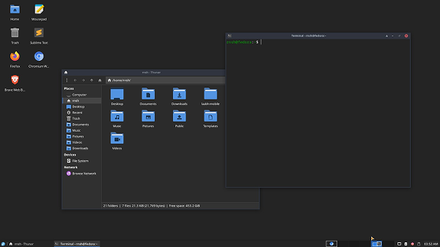

Past, Present & Future
This site took longer than it should have.
Not because it was technically difficult.
Mostly because I kept waiting for the right version of it to appear before making anything real.
I made too many designs, changed my mind too many times, and treated every small decision like it mattered more than it did. At some point, that starts to feel less like care and more like avoidance.
So this time, I opened VS Code, started with Astro, and let the site become whatever it needed to become.
No grand plan.
Just a place to write things down.
Past
I graduated in Computer Science in 2024.
At the time, I thought the path after that would be clearer. It was not.
Placements did not work out for me. Some of it was timing, some of it was skill, and some of it was just me not being as prepared as I should have been. That is not a very dramatic explanation, but it is probably the most accurate one.
So I started freelancing.
Mostly design work at first, with some development whenever the project needed it. It was not glamorous, but it forced me to figure things out quickly. There is a certain kind of learning that only happens when someone is waiting for a file, a screen, or a fix, and you cannot hide behind theory anymore.
Around the same time, I joined a small company as a User Experience Designer. It gave me a little structure, which I needed more than I admitted then.
The bigger shift came later, when I got the chance to join BunqLabs in Bangalore.
BunqLabs was different.
It was led by Sindhur Dutta, who taught me more than I expected and probably more than he realizes. He had a way of looking at design with patience. Not just the polished parts, but the messy middle where most decisions actually happen.
I was still rough around the edges. Sometimes naive. Sometimes too quick to assume I understood something. Sindhur never made that feel like the end of the conversation. He explained, corrected, questioned, and somehow made the work feel serious without making the room feel heavy.
I learned a lot there.
About design.
About taste.
About people.
Thank you, Sindhur.
I spent almost a year there before leaving in December 2025.
2026
At the beginning of 2026, the goal was simple.
Get better.
Not in a vague, inspirational way. I just knew there were gaps. Some in design, more in engineering, and a few in how I handled pressure when things stopped being familiar.
I picked up a few design projects and kept moving. Then another opportunity came in. I will leave the company unnamed, but the role started as a design role.
That changed over time.
Development became part of the work, and I said yes because I wanted to grow into it. Some parts went well. Some parts did not. The design phase felt familiar enough, but once the work moved deeper into development, the cracks showed.
Eventually, the offer was revoked during probation.
It was not what I hoped for.
But it also was not useless.
Looking back, there were mistakes on my side too. I lost momentum in places where I should have asked better questions, moved faster, or been more honest with myself about what I did not know. None of that is fun to admit, but it is useful.
The strange thing is that it still taught me more than I expected.
Sometimes the lesson is not clean.
Sometimes it just leaves a bruise and a note for later.
Present
Right now, I am trying to become a better engineer.
That means writing more code, reading more carefully, and not treating confusion as a personal failure every time it shows up.
Recently, I received a verbal confirmation for a MERN role. It is a work-from-office position, and I am looking forward to that more than I expected. There is something appealing about being around people again, building things in a real environment, and learning through the ordinary rhythm of showing up.
For now, I am waiting for the official offer and continuing to work on the parts of myself that still need work.
There are quite a few.
Future
Learn.
Build.
Ship.
Tools & The System


I enjoy building a workspace that slowly disappears while I work.
That is the goal, at least.
Not something flashy. Not something that needs attention every few minutes. Just a quiet setup that feels fast, familiar, and out of the way.
These are the tools I use daily, in no particular order:
- Fedora - OS
- Sway - Window Manager
- Foot - Terminal Emulator
- Helium - Browser
- VS Code - Writing code
I do not know where this story goes next.
Hopefully somewhere interesting.
Either way, I will probably write about it here.
Thanks for reading.
Take care.